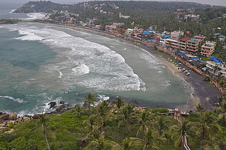
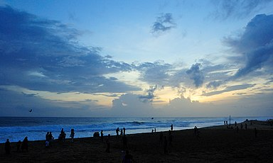
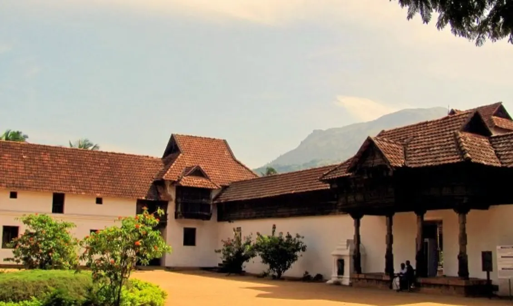

WELCOME TO GODS ON COUNTRY
NAPIER MUSEUM
Named after Lord Napier, this art and history museum was established in 1855. An exemplary example of gothic architecture-style, Napier Museum boasts greatly of its natural air conditioning system. It houses an exceptional collection of ornaments, bronze idols, chariots, and ivory carvings. The museum offers insight into the rich and glorious culture and history of Kerala.
The great contribution made by Rajput, Mughal, and Tanjore schools of art along with the skillful work by several Chinese, Japanese, and Tibetan artists can be found in here. The Japanese leather figures depicting the epics of Mahabharata and Ramayana catch the eyes of tourists.
Napier Museum is certainly one of the most visited tourist places in Trivandrum. Situated in the Museum compound, the ground floor of this place houses India’s oldest zoological garden. Another important feature is Sree Chithra Art Gallery, established by Maharaja Chithira Thirunalin in 1935. The gallery contains epic works from much famed Raja Ravi Varma and Nicholas Roerich
Amid a well-laid-out garden, the zoological park houses a lake and boat club. The park offers an excellent day outing for children and adults alike. It boasts of 75 different species of animals and birds from India, Ethiopia, and Australia. It is also home to the Lion-tailed Macaque, Nilgiri Tahr, Manipur deer, Indian Rhino, Nilgiri Langur, Asiatic Lion and the Royal Bengal Tiger. There is prominent fauna found here along with habitats of giraffe, hippopotamus, zebra, and Cape buffalo.

THE KANAKAKUNNU PALACE
Neighbor to the famous Napier Museum stands Kanakannu Palace, an embodiment of excellent craftsmanship and architecture. This palace is the proud possession of the state of Kerala. Built by Sree Moolan Thirunal for holding royal ceremonies and banquets retains its image as a place of entertainment for the royal family. At present too, the palace plays host to many cultural programs. It has been named as the heritage monument by the Indian National Trust for Art and Cultural Heritage (INTACH).
Swathi Thirunal, who was a popular ruler of his time, constructed tennis courts in the premises of the palace. Enormous and exquisite crystal chandeliers and antique furniture are the most attractive features here. The beautiful structure is a living testimony of the lifestyle of royals in Kerala. The picturesque backdrop of small yet lush hills and verdant meadows make it one of the most visited tourist places in Trivandrum.
Kanakakunnu Palace is the cultural hub of the city. The palace complex now owns two auditoriums, where a large number of cultural events take place. If you plan a visit, make sure you catch up the All India Dance Festival, popularly known as Nishgandhi festival hosted annually here.

KOVALAM BEACH
Epicentre of tourist flow, Kovalam Beach needs no introduction. This water delight seizes the top position in the list of tourist places in Trivandrum. Often crowded with both local and foreign tourists, it is located 13km away from the city.
Kovalam Beach is the treasure chest of multitude of adventure activities. Along with the sessions of para-sailing, diving and wind surfing, the beach also allows you to go on a leisure walk and offers a playful swimming time. Tourists have a choice to opt for lounge chairs to just sit and gaze at the most extraordinary sunrises and sunsets. The gleaming blue water and silver sands offers a quality time to enjoy nature at its best.
There are many beach resorts that offer customized services. From lip-smacking dishes to allocation of rooms, these retreats have impeccable services which one can easily avail. The well-trained staff offers comfortable and convenient environment. Assisting in planning a day on the beach, the stays take special care of the guests. It would be ideal to book in advance in order to avoid inconvenience.Along with sightseeing and mouth-watering cuisines, enjoy a session of rejuvenating Ayurveda massage on the Kovalam Beach. The best time to visit here is during the month of September and March. However, visit in monsoon season allows the best experience of ayurvedic therapies and treatments.
Ayurvedic therapies are on the top rank when it comes to things to do in Trivandrum. Enjoy outstanding facilities such as Ayurvedic massages and therapies in God’s Own Country. Kovalam beach proves to be an ideal place to experience the benefits of age old Ayurveda.

SHANGHUMUKHAM BEACH
Shanghumukham Beach is an ideal place for those seeking peace and serenity. Far from the hustle and bustle of the city, this place is known for breath-taking sunrises and sunsets; visit to this beach is one of the best things to do in Trivandrum The calm environs and exquisite shoreline here is undoubtedly commendable.The beach is also considered as the ‘Arattukadavu’ (Seat) of Sri Ananthapadmanabhan. Shamghumukham is also a prime location for the Ganesha Visarjan, where millions of Hindu devotees throng during the Vinayaka Chaturthi.
The best time of the year to visit here is around the Arattu festival. The beach is swarmed with large processions, carrying the deities of Lord Padmanabhawamy, Lord Narasimha and Lord Krishna and led by the former Maharaja of Travancore. The Maharaja is escorted by members of the Royal family, temple authorities, armed guards, police, and officers. The ceremonial bath in this place marks the conclusion of the festival, after which the deities are taken back to their respective temples by the procession.
Along both banks of the lake and its backwater canals, coconut groves and palm trees interspersed with towns and villages are seen. Kollam, (formerly Quilon) is an important historic port city located on the right bank of the lake. Boat cruises are operated by the Kollam Boat Club from Kollam to Alappuzha providing transport access to many other towns and villages along this route. Luxury houseboats also operate on the lake. The boat journey is an 8-hour trip, winding through lakes, canals and water bound villages.The lake and the city of Kollam on its banks and the Neendakara port at the confluence offer a means of transport for the state's trade and commerce in the cashew trading and processing industry as well as the marine products industry.
Preferred due to its isolated location and picturesque landscape, Shanghumukham is the pride of Trivandrum. The famous sculpture of a Mermaid (Jalkanyka) carved by Raja Ravi Varma is an added delight. The sculpture is more than 35m long and is an exemplary piece of art.
Visitors can expect comparatively quite evenings with impeccable sunsets. The breezy shorelines and excellent eating joints make this beach quite popular amongst the tourists. The Indian Coffee house, located across is the vantage point of witnessing beautiful sunset.

KUTHIRAMALIKA PALACE MUSEUM
Located adjacent to Padmanabhaswamy Temple, Kuthiramalika Palace Museum is the rarest specimen of workmanship. Built by Maharaja Swathi Balarama Varma, this palace displays valuable collections of royal family.
Beside the rich collection that it displays, this museum is an exemplary example of traditional Travancore-style architecture. Intricate wood carvings and distinctive patterns constitute a masterpiece of its kinds. Overhanging attics, pillar-lined courtyards and sloping roofs contribute to the exclusive look of the museum.
Visitors can expect a display of a collection, including Belgian mirrors, paintings, Kathakali mannequins, exquisite traditional furniture. The two royal thrones; one manufactured of Bohemian crystals, embossed with an emblem of ‘Conch’ on the backrest and the other made of ivory are the prime attractions of the museum. Marble-made idols and sculptures, musical instruments and the alcove used by Swami Thirunal have also been kept in the showcase. An illusion portrait by veteran painter Sveroslav Roerich is another attractive feature here.

PADMANABHAPURAM PALACE
Rejoicing in all its glory, the Padmanabhapuram Palace is located 64 km from Thiruvananthapuram in Thuckalay. This 16th century palace quenches the thirst of art lovers. This fascinating structure has a special air about it. The rosewood carved ceilings and a fine collection of paintings makes it one of the best specimens of Kerala.
Serenaded with fine décor, this palace displays coloured mica windows, antique furniture and Chinese carvings. Ceilings are carved with 90 different floral designs and the Durbar Hall has a glossy floor. Pictures of Lord Krishna, brass lanterns, mural paintings and a four poster medicinal bed add grace to the King’s bedroom. Details like the earthen urns, swimming bath, dance hall, fish carvings on ceilings, Belgian mirrors, 17th and 18th century frescoes and Saraswati Temple sum up to a pleasant structure.

PADMANABHASWAMY TEMPLE
Dedicated to Lord Vishnu, Sree Padmanabhaswamy Temple is one of the famous places to visit. This holy shrine is one of the 108 abodes of Lord Vishnu. A large number of devotees throng the temple on multiple occasions.The place of worship has lent its names to the capital city as ThiruAnanthaPuram, which means Sacred Abode of Lord Anantha Padmanabha. Dravidian style of architecture is prominent in this holy structure.
he chief attraction is the deity of Padmanabhaswamy, enshrined in a reclining posture. However, the main deity remains that of Lord Vishnu and his heavenly consorts namely, Sridevi and Bhudevi. The sacred idol is covered with a special ayurveda mixture that helps in keeping the plaster intact and clean. Devotees donate a large sum of money and precious articles in this temple. The assets are believed to be value around 90,000 crores. The invaluable donations are kept safe in 6 different cellars.Padmanabhaswamy Temple should definitely be included in the itinerary of the places to visit in Trivandrum. Indeed, the temple remains impeccable in appearance and religious sentiments attached to it.